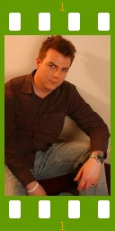

People of openSUSE: James Ogley

The Planet SUSE sysadmin, James Ogley, was interviewed by us. Apart from managing the biggest openSUSE blog aggregator, he is also part of the openSUSE GNOME team packaging lots of GNOME/GTK applications.
- Nickname: Riggwelter
- Homepage: http://jamesthevicar.com
- Blog: Same as home page
- Favorite season: Definitely Autumn. I love sitting indoors with the heat & fire on and a glass of wine while outside the wind and rain are raging.
- Motto: Don’t have one really, but I try to live by a combination of the classic SUSE one “Have a lot of fun…” and the Christian creeds.
Please introduce yourself!
I’m 31 and an ordained minister in the Church of England – I work for a church near the south coast. I’ve been married for nearly ten years to Amanda and we have a baby boy, Callum (and a hamster, Bailey!). I failed a degree in Computer Science but hold a BA with honours in Ministry.
Tell us about the background to your computer use.
Computers have always been around, my first computer was a ZX81 (with the 16k RAM pack). I owned Sinclair Spectrums (48k, 48k+, 128k+3) and learnt to program in their variant of BASIC in a very rudimentary way. At school, BBC Micros gave way to Amstrad CPWs (and learning to program in Logo) and then the Acorn Archimedes and RISC OS.
When I started University in 1994, I was introduced to the Dynix version of UNIX and then to Linux in early 1995.
When and why did you start using openSUSE/SUSE Linux?
I interviewed for a job at SUSE UK in December 1999 and was presented with a copy of 6.3 at the end of the interview. I installed it on my home PC that evening (in place of Red Hat) and never looked back.
I got the job by the way :)
When did you join the openSUSE community and what made you do that?
In August 2005, I was emailed a link to a story in Linux Magazine about the possibility of SUSE being “opened”. I posted something about it in my blog and, once it was on Planet SUSE, Andreas Jaeger emailed me with some insider info ;) . I was pretty well there from the start. Interestingly, back in October 2004 I’d posted what was effectively a call to do just this.
In what way do you participate in the openSUSE project?
I run Planet SUSE – our aggregation of blogs by hackers, packagers and other contributors. I’m a member of the GNOME Team where I look after the GNOME:Community repository along with Michael Wolf as well as contributing to the other GNOME repos. All the usual bug reporting one would expect goes on as well across the areas of the distro that I use (which includes a lot of server-side stuff as well because of my Sys Admin background). I also hang around in various project related IRC channels when I have the time (and even when I don’t). I used to run the usr-local-bin project, providing GNOME on SUSE before we had the GNOME Team in its current form.
What especially motivates you to participate in the openSUSE project?
Firstly it’s because I really believe in the Free Software movement and ideals. In terms of why openSUSE (rather than Ubuntu or Fedora for example), there’s an emotional connection – my time at SUSE was the best “real” job I had. I also think that on the whole, the combination of the employed staff and the community contributors (now mostly through either the Build Service or PackMan) make it the best distro out there in terms of the balance between being stable & secure on one hand and pushing forward on the other.
What do you think was your most important contribution to the openSUSE project/community or what is the contribution that you’re most proud of?
It’s hard to choose between usr-local-bin and Planet SUSE really. Given that Planet SUSE still exists, I’ll go for that. It provided a focal point for the community even before SUSE became openSUSE. I hope and think it still does.
When do you usually spend time on the openSUSE project?
Random times really, my job’s not 9-5 so my “free” time isn’t regular either.
Three words to describe openSUSE? Or make up a proper slogan!
Three words: Stable, secure, usable. A slogan in Haiku form: openSUSE is / All you need for Linux use / Download and use, now.
What do you think is missing or underrated in the distribution or the project?
I think the input of non-Novell employees is still underrated by people who aren’t very actively involved but I can say from my own experience that it’s very real.
What do you think the future holds for the openSUSE project?
World domination ;) Nah, seriously, 10.3 is a fantastic distribution and the quality curve seems to continue going up. I’m looking forward to 11.0 which at the rate things are going will blow people’s minds.
A person asks you why he/she should choose openSUSE instead of other distribution/OS. What would be your arguments to convince him/her to pick up openSUSE?
If they were coming from a certain other OS, it’s easy: “Escape from viruses and spyware”.
From other distros, my view tends to be that if they’re on the side of the angels already and their distro does what they require, why rock the boat?
Which members of the openSUSE community have you met in person?
Quite a few from when I worked at SUSE – too many to list really.
How many icons are currently on your desktop?
Excluding ones that Nautilus creates automatically, three: Evolution, Firefox and PokerStars.
What is the application you can’t live without? And why?
Evolution because without its diary, I’d never be anywhere on time.
Which application or feature should be invented as soon as possible?
The ability to activate my cappuccino machine remotely :)
Which is your preferred text editor? And why?
Vi because it’s fast and available on almost any *NIX system. I once was turned down for a job because I answered that question at the interview and the guy interviewing me was an Emacs user. I’m not that religious about editors, there are far more important things to worry about.
Which famous person would you want to join the openSUSE community?
Everybody’s welcome.
Which computer related skills would you like to have?
I’d love to be a better programmer, I can get by but I could never have made a living as a hacker.
The Internet crashes for a whole week. How would you feel, what would you do?
I’d feel ticked off at first but then probably enjoy the fact that no-one could hassle me and head for the pub :)
Which is your favorite movie scene?
When Harry Met Sally – not the “I’ll have what she’s having” scene but the Pepper/Papricash/Pecan Pie scene. Billy Crystal at his best.
Star Trek or Star Wars?
Trek – but only just.
What is your favorite food and drink?
I love chinese food. Drink depends on my mood but either a really good British ale or a good red wine.
Favorite game or console (in your childhood and nowadays)?
I loved the Dizzy series on the Spectrum. The only game I play nowadays is poker.
Which city would you like to visit?
Prague.
What is your preferred way to spend your vacation?
Reading and visiting local restaurants and bars.
Someone gives you $1.000.000. What would you do with the money?
I’d give quite a bit of it to charities working to lift communities out of poverty in Africa. I’d pay off our mortgage and student loans. I’d set up a trust fund for my son. Buy a new car and play in a European Poker Tour event.
If traveling through time was possible, when would we be most likely to meet you?
First few centuriues CE – I’d be fascinated to see things like the early Christian councils and the fall of the Roman Empire.
There’s a thunderstorm outside. Do you turn off your computer?
I don’t normally. I keep meaning to invest in a decent UPS so I’m protected. My main work computer though is a laptop so it’s less of an issue.
Have your ever missed an appointment because you forgot about it while sitting at your computer?
I’m sure I’ve missed loads ;)
Show us a picture of something, you have always wanted to share!
http://www.tesco.com/pi/xpi/4/5010277010164_200.jpg – I always want to share a glass of sherry with people ;)
{kind=link}
You couldn’t live without…
Which question was the hardest to answer?
Trek or Wars – it’s so damn close…
What other question would you like to answer? And what would you answer?
“Can you direct me to the Post Office please?” – Down the footpath, turn right and when you get to the junction, it’s opposite you.